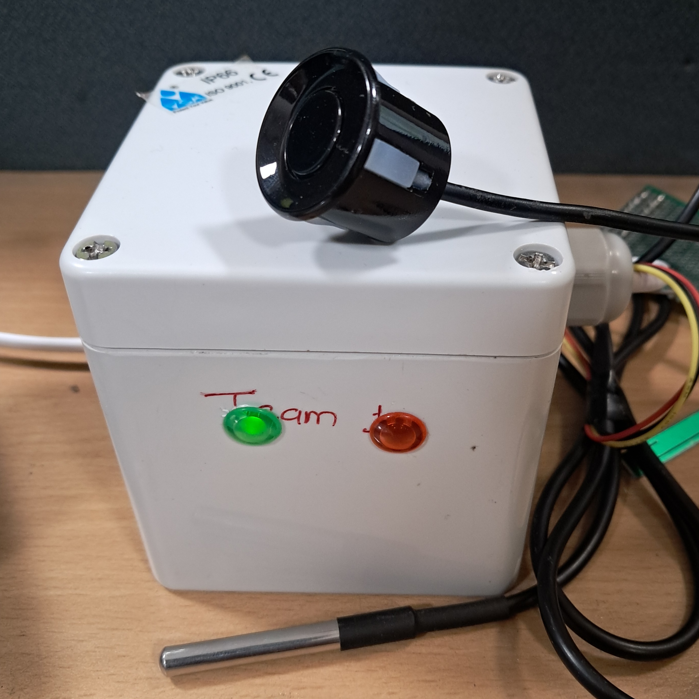
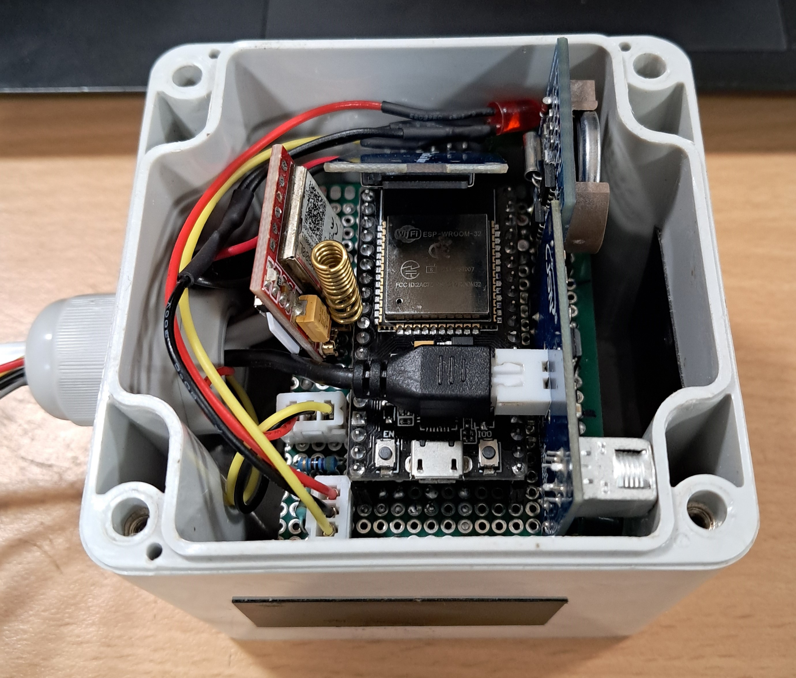
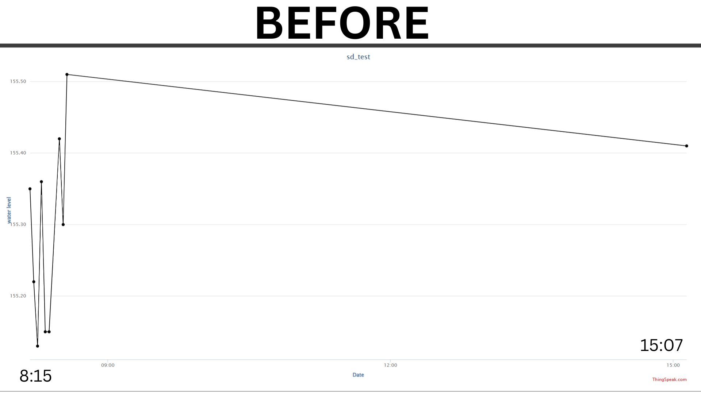
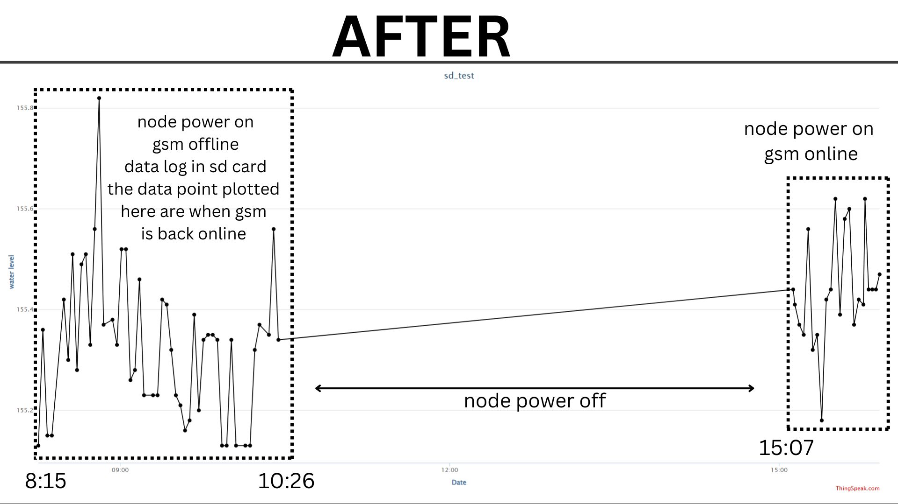
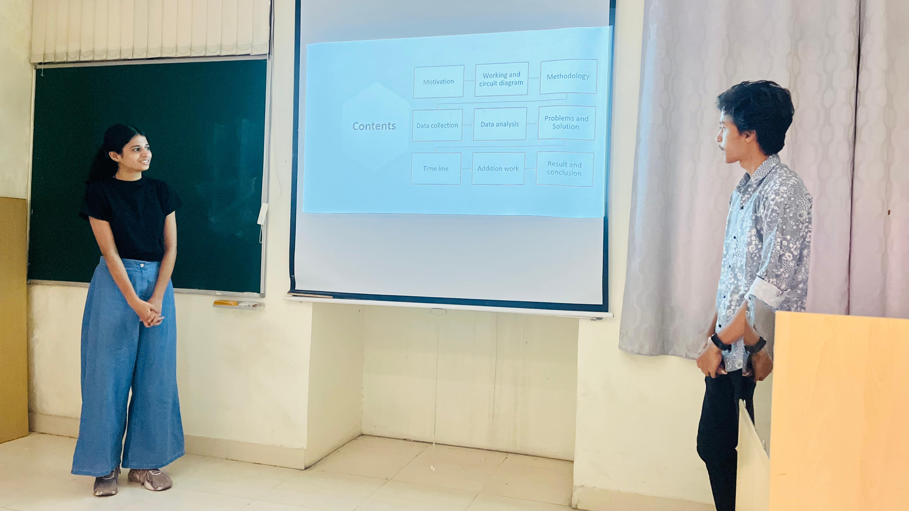
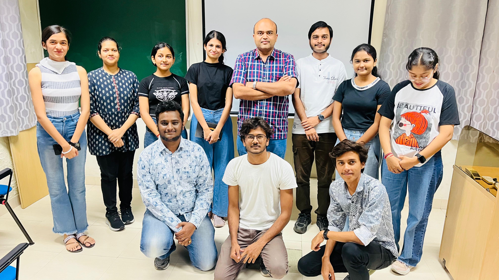
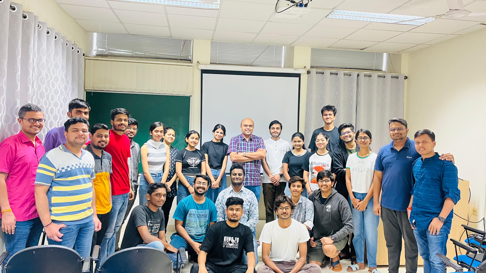
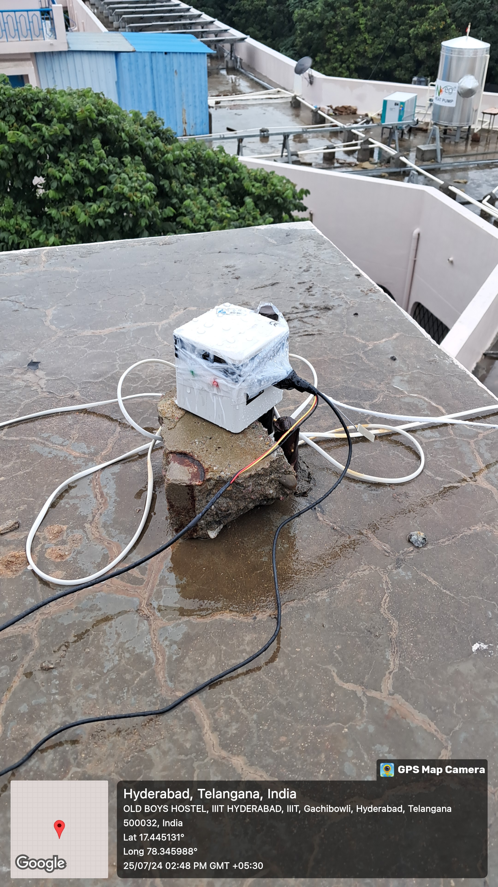
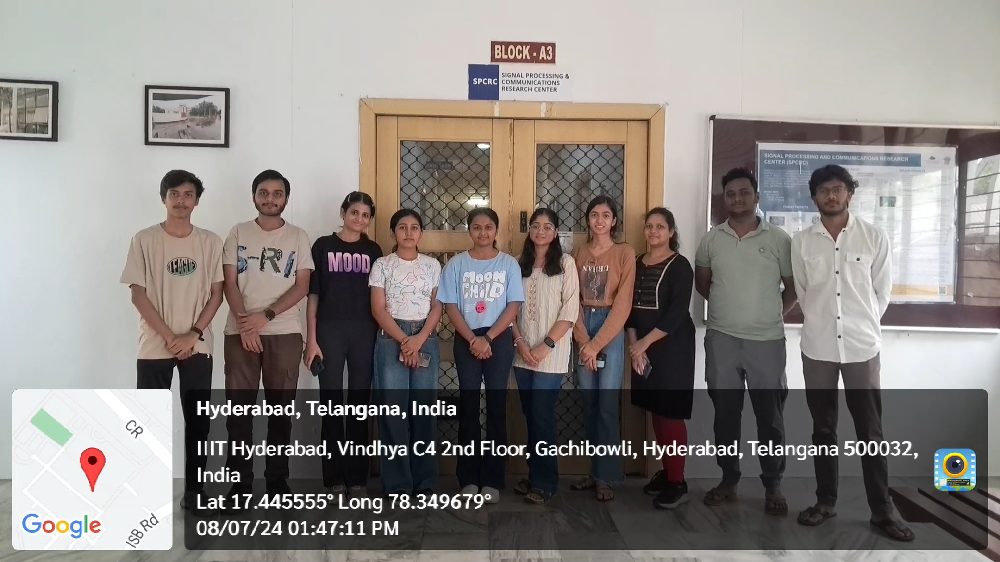
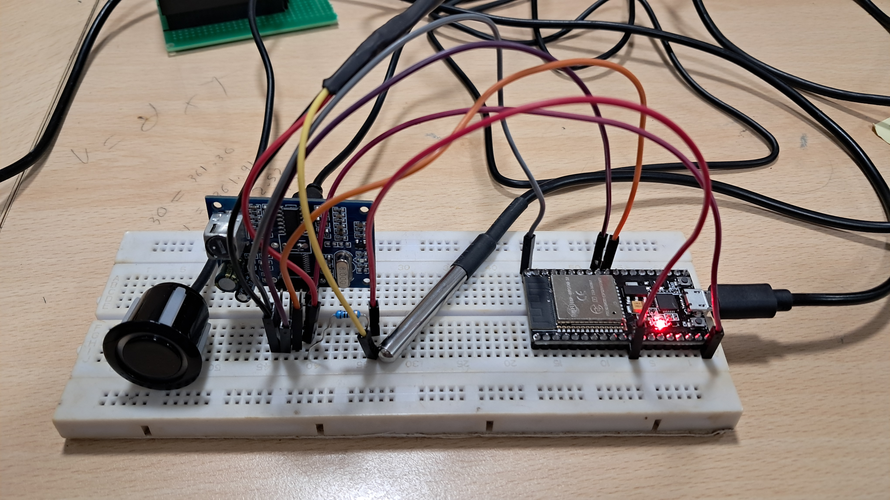

Mentor: Dr. Sachin Chaudhari
Domain Experts: Ritik Yelekar, Sahil Padole, Tanmay Bhatt
Internship Period: 25 June 2024 – 2 August 2024
During my internship at the Signal Processing and Communications Research Center (SPCRC) at the International Institute of Information Technology, Hyderabad (IIITH), I worked on the development and deployment of a real-time IoT-based Smart Water Level Monitoring System. The project was executed under the guidance of Dr. Sachin Chaudhari and in collaboration with research mentors from the Water Lab. The system was intended to monitor water levels in overhead tanks across the IIITH campus, optimize water usage, and provide actionable insights for water resource management. It combined ultrasonic sensing, temperature compensation, GSM communication, and cloud analytics to create a robust, real-world smart infrastructure solution.
The initial system was designed around the ESP32 microcontroller, a JSN-SR04T waterproof ultrasonic sensor, and a DS18B20 temperature sensor. These sensors worked in tandem to ensure temperature-compensated distance measurements. The data was transmitted to ThingSpeak using a SIM800L GSM module, where real-time graphs and analytics were visualized.
This system aimed to accurately detect refill and consumption patterns, identify anomalies, and assist in automated decision-making for water management. Over time, collected data was also preprocessed and analyzed using MATLAB to smooth trends and detect unusual behavior, paving the way for future machine learning-based anomaly detection.
The system operated on a 2-minute cycle that involved:


One of the key issues faced during the initial deployment was intermittent GSM connectivity, which occasionally resulted in data loss. In response to this, a new version of the node was proposed and implemented with enhanced logging and fault-tolerant features.


To address GSM reliability issues and ensure uninterrupted data logging, we developed an improved system incorporating an RTC (DS3231) for accurate timekeeping and an SD card module for local storage.
Through this internship, I gained invaluable hands-on experience with embedded systems, sensor integration, wireless communication, and data engineering. I worked on solving real-world challenges such as sensor inaccuracies, network unreliability, and cloud connectivity limitations, which deepened my understanding of IoT system design and deployment. The improved version of the system ensured not only real-time monitoring but also fail-safe operation, contributing directly to IIITH's smart infrastructure goals.
I am extremely grateful to Dr. Sachin Chaudhari for providing the opportunity to work on this impactful project and for his continuous guidance throughout the internship. I also sincerely thank Ritik Yelekar, Sahil Padole, and Tanmay Bhatt for their support and mentorship, which played a key role in shaping the technical and analytical aspects of the work.
The IoT-Based Smart Water Level Monitoring System at IIIT Hyderabad demonstrates how low-cost hardware, robust programming, and intelligent data handling can come together to create effective solutions for real-world problems. The enhancements made in the new version ensured data integrity, resilience, and operational continuity—making it an ideal candidate for deployment in broader smart city water management applications. This internship has been a pivotal milestone in my journey, enriching my skills in both engineering and research.





